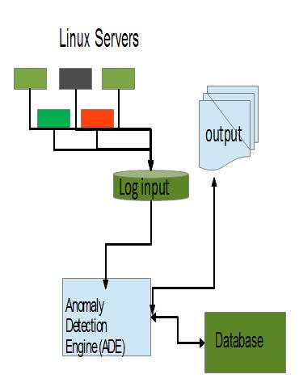

Anomaly Detection Engine for Linux Logs (ADE)
How ADE integrates into your environment
Anomaly Detection Engine for Linux Logs (ADE) allows you to find unusual message traffic (anomalies) generated by one or more production Linux servers. It uses the files normally stored on DASD in /var/log/messages by a syslog daemon like syslog_ng or rsyslog. These log files in either RFC3164 or RFC5424 format are the input which is processed by the ADE. ADE writes a summary for each period (day) of the intervals within the day and for each interval a summary of the message traffic to the file system that can be examined using a standard web browser. Additional data which is used by ADE processing is stored in an JDBC compliant database.
Here is how ADE fits into a Linux environment

ADE can be used
- To examine a set of logs to find anomalies which may be helpful when attempting to find the root cause of a problem or incident
- To examine the currently generated logs to find anomalies which may be helpful when attempting to find the cause of an on-going problem or incident
To detect anomalies in Linux logs, which must be in either RFC3164 or RFC5424 format, use the following process:
-
Sets up the environment for ADE
- Create a database using the ControlDB create command
- Determine which set of Linux systems should be grouped together
-
To determine the root cause of a problem, process the appropriate set of historical logs using ADE
- Determine what time period to use when checking for anomalies
- For each set of logs to be analyzed to determine what messages were different or unexpected
- Clean up data base using the ControlDB delete command
- Prime the database with Linux logs from before the time periods of interest using the upload command
- Create the model groups using the updategroups command
- Test that there is sufficient data to create a model using the verify command
- Create a model of expected behavior using the train command
- Analyze the time period of interest using the appropriate Linux logs that contain the period of interest using the analyze command
- Examine the time periods of interest using a standard web browser which is used to display to results stored in the file system
-
To create results which are available when a problems occurs, use ADE to process the logs for the Linux systems of interest continuously
- To initialize ADE to support continuous processing
- Prime the database with Linux Logs from before the time periods of interest using the upload command
- Create the model groups using the updategroups command
- To calibrate ADE use standard Linux support like cron to
scheduled the following to run at a pre determined interval ( likely every 30 days)
- Test that there is sufficient data to create a model using the verify command
- Create a model of expected behavior using the train command
- To generate results that
can be examined using a web browser
use standard Linux support like cron to schedule the following to run at a predetermined interval (likely every day or
when the logs are about to be deleted, rotated or compressed)
- Analyze the time period of interest using the appropriate Linux logs that contain the period of interest using the analyze command
- To initialize ADE to support continuous processing